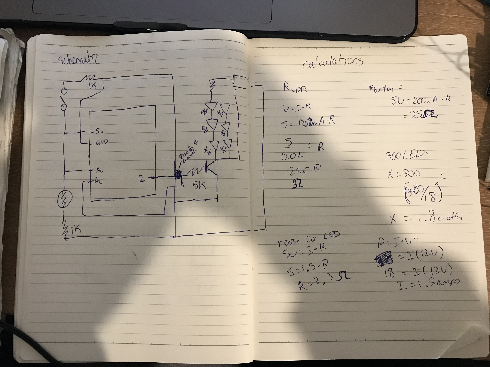
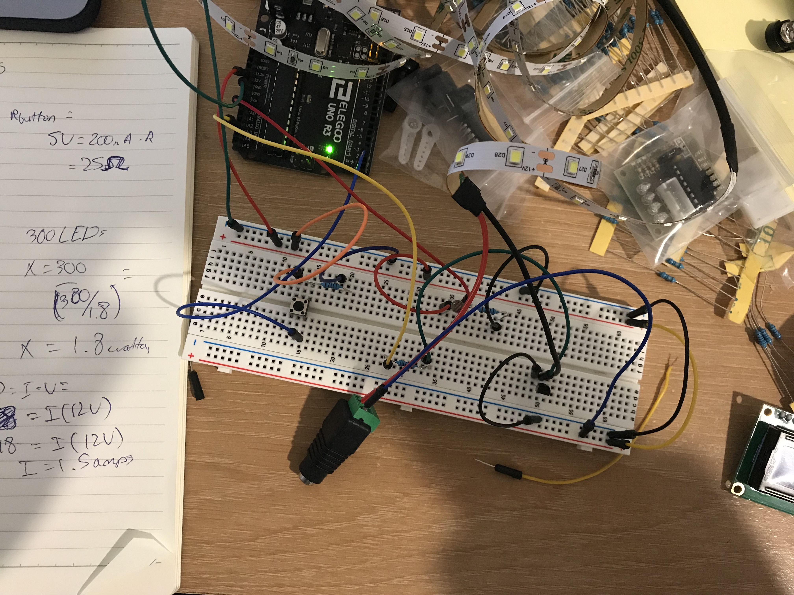

Jonathan Tran Assignment 7: motors
unfortunately, I couldn't figure out how to make my assignment work. I wanted to change the size of a circle based on light input and then change the color of the circle based on clicking a button from the arduino, but failed to do so. Something went wrong for me when getting data from the arduino, I got an error when trying to use my array index 0 values, and while I could "use" the index 1 value, the circles weren't being drawn to size. A picture of the schematic & calculations:

What the circuit looks like:

Here's my code:
const int LED = 10; // Analog output pin that the LED Strip is attached to
int sensorValue = 0; // variable to store the value coming from the sensor
int outputValue = 0; // variable to store the value for the output
const int inputValue = 75;
void setup() {
Serial.begin(9600);
pinMode(LED, OUTPUT); // set the LED Strip as output
}
void loop() {
int button = digitalRead(2);
int LDR = analogRead(1);
Serial.println(inputValue);
if (inputValue > 70) { // if the sensor value is greater than 70, turn the LED Strip off. (if there's enough light, turn the LED strip off)
digitalWrite(LED, LOW); // turn LED Strip off by setting output to 0.
Serial.print("Off "); // print to serial monitor, "Off"
} else if (sensorValue <= 70) { // if the output value is less than or equal to 200, turn the LED Strip on
digitalWrite(LED, HIGH); // turn the LED strip on by setting the brightness to outputValue
Serial.print("On "); // print to serial monitor, "On"
}
if (Serial.available() > 0) { // if there's serial data
int inByte = Serial.read(); // read it
Serial.write(inByte); // send it back out as raw binary data
analogWrite(5, inByte); // use it to set the LED brightness
}
delay(100);
}
Here's images of my javascript code and a gif of the serial monitor.